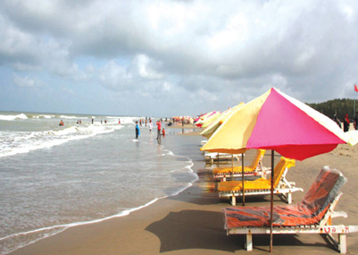

<p style="text-align: justify;">Cox&rsquo;s Bazar, a district headquarters in Bangladesh and a fishing port
    with world&rsquo;s longest natural sandy beaches is a beautiful place.Cox's Bazar is a district
    in the Chittagong Division of Bangladesh. It is named after Cox's Bazar town. It is located 150
    kilometres (93 mi) south of Chittagong. Cox's Bazar is also known by the name Panowa ("yellow flower").
    Another old name was Palongkee. The modern Cox's Bazar derives its name from Captain Hiram Cox (died 1798),
    an army officer who served in British India. It is one of the fishing ports of Bangladesh. At Cox's Bazar
    is one of the world's longest natural sea beaches (120 kilometres (75 mi) long including mud flats).</p>
